Benchmarks and comparisons
Michael Barkasi
2026-03-23
tutorial_benchmarks.RmdIntroduction
Wispack tests for functional spatial effects (FSEs) using spatial transcriptomics data. Consider a two-level covariate \xi (e.g., control vs treatment, healthy vs diseased, left vs right hemisphere) and spatial coordinate x (e.g., cortical depth, distance from a tumor, distance from a central vein in the liver). A gene is differentially expressed (DE) with respect to \xi if its expression level depends on \xi. A gene is spatially variable (SVG) if its expression level depends on spatial coordinate x. A covariate \xi has a FSE on a gene if the spatial distribution of that gene with respect to x depends on \xi. (The adjective “functional” is included because it’s assumed that the distribution of the gene with respect to x has biological significance.)

Comparison between testing for differentially expressed genes, spatially variable genes, and genes with function spatial effects. For visualization purposes, mouse brain slices represent the tissue sample and laterality (left vs right hemisphere) represents a fixed effect (i.e., covariate).
To the best of our knowledge, wisp models provide the only statistical framework for testing for FSEs and (hence) wispack is the only software for FSE testing. Wisp models allow for FSE testing because they explicitly model the spatial distribution of gene expression in terms of parameters \beta which can themselves depend on some other covariate. A coarse-grain work-around for FSE testing would be to include an interaction term x\times\xi between a spatial variable x and another covariate \xi of interest in a linear model, but this approach could only capture an additive effect constant across space. That is, such an approach would make transcription rate \lambda (or its log transform) into the function: \lambda(x, \xi) = \beta_0 + \beta_x x + \beta_\xi \xi + \beta_{x\times\xi} x\times\xi Wisp models, on the other hand, can capture complex effects on density gradients, change-point locations, and local expression levels.
This tutorial will use simulations to benchmark wispack’s ability to detect FSEs. In order to contrast FSE testing with DE and SVG testing, we will also analyze the simulations with DESeq2 (from Love et al 2014) and ELLA (from Wang and Zhou 2025).
Benchmark simulations
Wispack comes with a function, attractor_simulation, for generating simulations with stipulated DE genes, SVGs, FSEs, and inter-replicate variation. This function uses seed data, either from real spatial transcriptomics runs or itself simulated.
Simulation seed
We begin with real spatial transcriptomics data from the Allen Institute. This data set, described by Yao et al 2023, contains coronal brain slices from an adult male mouse imaged with the Vizgen MERSCOPE platform with a 500 gene panel. Wispack includes a csv file with counts for four marker genes from three slices: Pvalb (parvalbumin neurons), Slc17a7 (glutamatergic neurons), Tac2 (somatostatin neurons), and Vip (vasoactive intestinal peptide neurons).
countdata <- read.csv(
system.file(
"extdata",
"Allen_data.csv",
package = "wispack"
)
)Here is the head of the imported seed data:
## count cell_id slice_num gene coord_x coord_y
## 1 10 1018093344200990605 29 Slc17a7 3.485960 4.946534
## 2 1 1018093344200990605 29 Vip 3.485960 4.946534
## 3 1 1018093344101180865 29 Tac2 4.062627 5.040059
## 4 1 1018093344101180865 29 Slc17a7 4.062627 5.040059
## 5 2 1018093344100990765 29 Slc17a7 3.502277 4.956870
## 6 1 1018093344102270476-1 29 Pvalb 6.834409 5.008881Let’s visualize the seed data:
ggplot(countdata, aes(x = coord_x, y = coord_y, color = gene)) +
geom_point(size = 0.1) +
facet_wrap(~ slice_num * gene) +
ggtitle("Seed data: Three coronal slices from Allen MERFISH data") +
theme_minimal() +
theme(
panel.background = element_rect(fill = "white", colour = NA),
plot.background = element_rect(fill = "white", colour = NA),
legend.position = "none"
)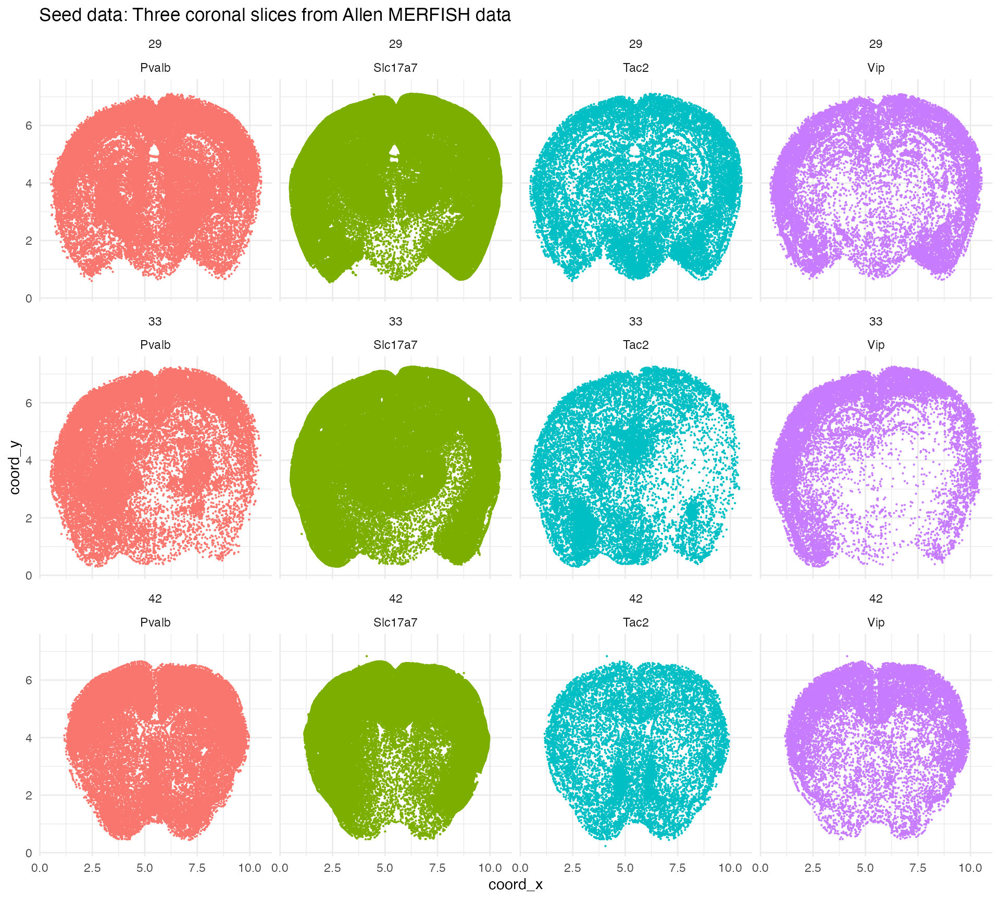
The point of starting with real data is to ensure that the simulations contain genes with realistic transcript counts and distributions. We will seed the simulations with data from a 2\times 2 mm region of slice 33.
seed_patch <- countdata[
countdata$slice_num == 33 &
countdata$coord_y >= 2 & countdata$coord_y <= 4 &
countdata$coord_x >= 1 & countdata$coord_x <= 3,]Let’s visualize the seed patch. Note that in this plot (and the previous one), a single dot is used for each cell coordinate containing at least one transcript from each gene. Some dots represent multiple transcripts from the same gene in the same cell.
ggplot(seed_patch, aes(x = coord_x, y = coord_y, color = gene)) +
geom_point(size = 0.5) +
ggtitle("Seed patch: 2x2 mm region from slice 33") +
theme_minimal() +
theme(
panel.background = element_rect(fill = "white", colour = NA),
plot.background = element_rect(fill = "white", colour = NA))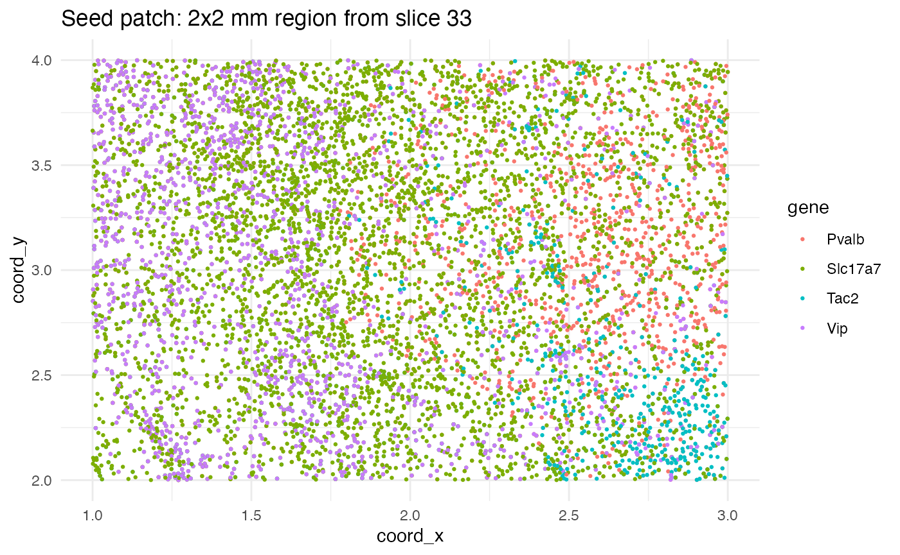
Simulating SVGs
With a patch of seed data in hand, we need functions which will transform this data into simulations with known (stipulated) DE genes, SVGs, FSEs, and inter-replicate variation. Wispack provides the function attractor_simulation for this purpose. Let’s load wispack and run this function once to see how it works.
# Load wispack
library(wispack, quietly = TRUE)
# Ensure reproducibility
set.seed(12399)
# Run simulation
test_sim <- attractor_simulation(
seed_data = seed_patch,
n_bins = 100,
n_replicates = 4,
replicate_spatial_scalar = 0.05,
min_effect_size = 0.05,
print_plots = TRUE
)The function attractor_simulation assumes that the input seed is a data frame with at least the columns gene, coord_x, coord_y, and count. It assumes coord_x and coord_y are continuous variables and will bin them into a discrete grid with n_bins bins along each axis. The function will create n_replicates replicates for two conditions, called ref for “reference” and trt for “treatment”. The parameter replicate_spatial_scalar controls the amount of inter-replicate spatial variation, while min_effect_size controls the minimum effect size for FSE genes. (The amount of inter-replicate rate variation is always set randomly.) Setting print_plots to TRUE will generate plots of the simulated data for visual inspection.
A list is returned by attractor_simulation, with the following components:
##
## genes: character
## SVGs_idx: integer
## SVGs: character
## FSEs_idx: integer
## FSEs: character
## attractor: numeric
## effect: numeric
## replicate_rate_scalars: numeric
## data: data.frame
## plots: listFor example, in this case, the genes are:
## Pvalb, Slc17a7, Tac2, VipOf these genes, the following were randomly selected as SVGs:
## Pvalb, Slc17a7, Tac2And the following genes were randomly selected from the SVGs as exhibiting a FSE under the simulated treatment condition:
## Pvalb, Tac2Spatially variable genes are simulated in a two-step process. First, the spatial distribution of all genes is smoothed by randomly shuffling the spatial coordinates. (Cell IDs are not preserved during this shuffling, so any cell-type related statistics will be lost.) Here, for example, are the plots of Vip before and after smoothing:
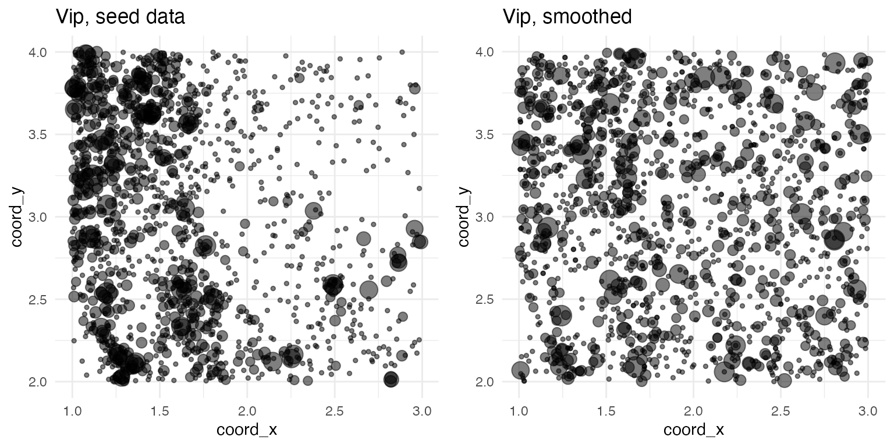
Next, at least one gene is randomly selected to be a SVG. For each SVG, a single spatial coordinate \langle x^\prime, y^\prime\rangle is randomly selected from the data set to serve as an attractor point. Spatial points \langle x, y\rangle are pulled towards the attractor point according to the transformation: x\mapsto x - (x - x^\prime)\eta y\mapsto y - (y - y^\prime)\eta The term \eta is a noise variable from a beta distribution: \eta \sim \mathrm{Beta}(1,\frac{1-D}{D}) And the term D is the normalized distance from the attractor point: d = \sqrt{(x - x^\prime)^2 + (y - y^\prime)^2} D = 1 - \frac{d}{\mathrm{max}(d)} In fact, D is the expected value of the beta distribution. Thus, points closer to the attractor are pulled more strongly towards it. For example, here are the plots of Slc17a7 before smoothing, after smoothing, and after inducing spatial variability:
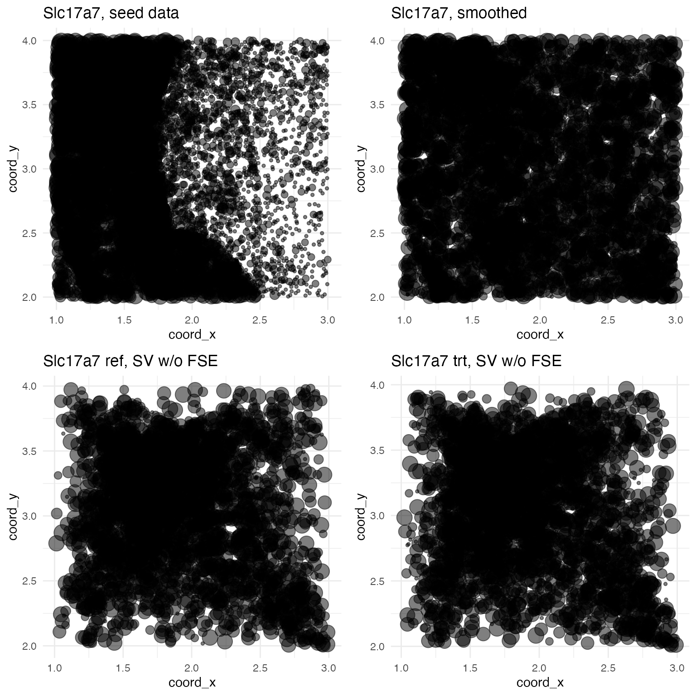
Simulating FSEs
Notice that two plots are shown with spatial variability: one for the reference condition and one for the treatment condition. As Slc17a7 was not selected to be exhibit a FSE in the treatment condition, the spatial distributions are the same. For all SVGs, the treatment condition is simulated by inducing a rate change via an effect term b between zero and one: \lambda\mapsto\lambda_{\mathrm{trt}} = 4b^2\lambda The actual count y at each point is then pulled from a Poisson distribution with rate \lambda_{\mathrm{trt}}. y \sim \mathrm{Pois}(\lambda_{\mathrm{trt}}) For genes like Slc17a7 not selected to exhibit FSEs, b = 0.5. For genes like Pvalb and Tac2 selected to exhibit FSEs, b is randomly chosen to be a value between zero and one but such that the absolute value of 4b^2 - 1 is greater than min_effect_size (by default, 0.05). In this example:
##
## Pvalb: b = 0.1157806
## Slc17a7: b = 0
## Tac2: b = -0.4785648
## Vip: b = 0For convenience, the attractor_simulation function returns b - 0.5 under the effect component of the output list. The advantage here is that genes without a FSE in the treatment condition will show an effect value of zero, a FSE that down-regulates expression will be negative, and a FSE that up-regulates expression will be positive. For example, here are the plots for Pvalb, which exhibits a slight up-regulating FSE:
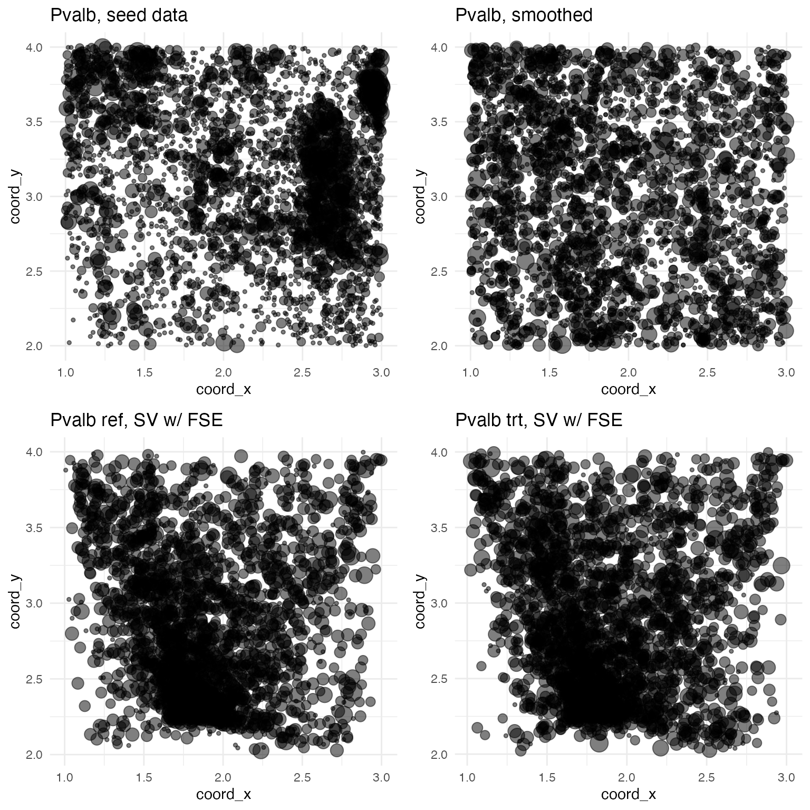
And here are the plots for Tac2, which exhibits a large down-regulating FSE:
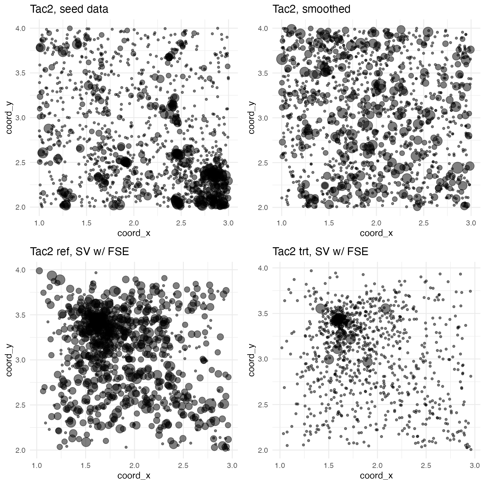
Simulating replicates
The above procedure generates a single data set, from the seed patch, consisting of counts y (possibly > 1) for each gene at some number of spatial coordinates, for both the ref and trt conditions. This single data set is itself used as a seed (with counts y becoming rates \lambda) to make psuedo-replicates exibhiting some amount of variation, both in spatial distribution and in counts. Variation in spatial distribution is simulated by a scaled application of a random affine transformation A of shears and scalings to the spatial coordinates: \begin{pmatrix} x^\prime \\ y^\prime \end{pmatrix} = \begin{pmatrix} d_x \\ d_y \end{pmatrix} \circ \begin{pmatrix} x \\ y \end{pmatrix} + \begin{pmatrix} 1 - d_x \\ 1 - d_y \end{pmatrix} \circ A \begin{pmatrix} x \\ y \end{pmatrix} In the above equation, the “\circ” is the Hadamard (element-wise) product. With x_{\mathrm{mid}} and y_{\mathrm{mid}} being the midpoints of x and y, respectively, the scaling terms d_x and d_y are defined as: d_x = (x - x_{\mathrm{mid}})^2/\mathrm{max}((x - x_{\mathrm{mid}})^2) d_y = (y - y_{\mathrm{mid}})^2/\mathrm{max}((y - y_{\mathrm{mid}})^2) Variation in counts for each replicate is simulated by scaling according to a randomly chosen replicate scalar c between zero and one: y \sim \mathrm{Pois}(2c \lambda)
For example, in our test simulation, the scale factors c are:
for (r in 1:4) cat("\nReplicate ", r, ": c = ", test_sim$replicate_rate_scalars[r], sep = "")##
## Replicate 1: c = -0.3201773
## Replicate 2: c = 0.01829868
## Replicate 3: c = 0.1015573
## Replicate 4: c = -0.1694042The effects of these scalars can be seen by plotting one of the genes in the reference condition across all replicates:
mask <- test_sim$data$gene == "Tac2" & test_sim$data$fixedeffect == "ref"
data <- test_sim$data[mask,]
ggplot(data, aes(x = coord_x, y = coord_y, size = log(count + 1))) +
geom_point(alpha = 0.5) +
facet_wrap(~ replicate) +
ggtitle("Tac2 replicates under reference condition") +
theme_minimal() +
theme(
legend.position = "none",
panel.background = element_rect(fill = "white", colour = NA),
plot.background = element_rect(fill = "white", colour = NA))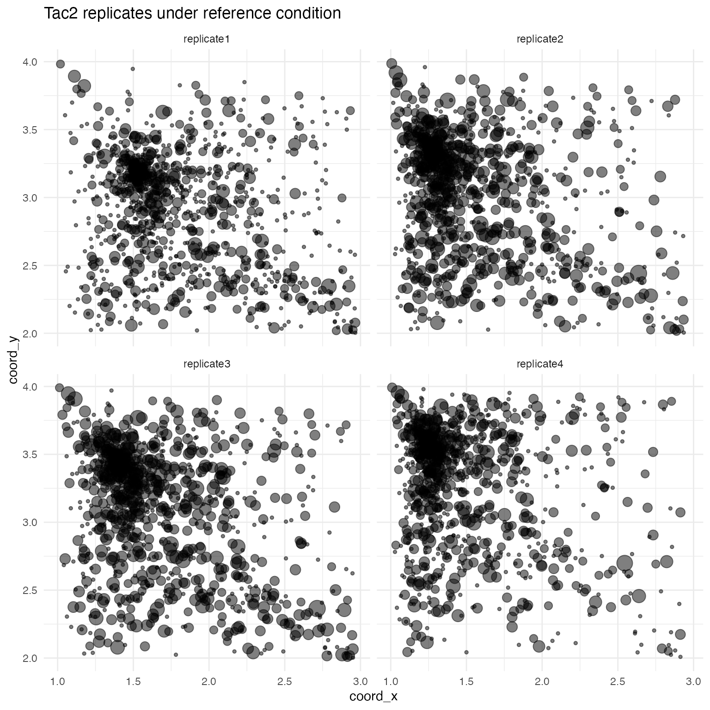
Modeling simulations
Functions are needed to apply software packages to the simulations made with attractor_simulation.
Wispack
For wisp modelling, wispack comes with a ready-made function for benchmarking attractor-based simulations, called model_attractor_simulation_wisp. The function takes four arguments: sim, sim_num, bs_num, and max_fork. The sim argument takes the output of the attractor_simulation function. The sim_num is an integer value used to label the results of this particular simulation run for later aggregation with other simulation runs. Wispack also uses this number to set the seed for the random-number generator. The bs_num argument is the number of bootstrap resamples to use for estimating p-values. (The model_attractor_simulation_wisp function will only use bootstrapping; MCMC estimation is not an option.) Finally, the max_fork argument sets the maximum number of parallel processes to use during bootstrapping. The function model_attractor_simulation_wisp outputs a data frame with results that can be aggregated with other simulation runs for benchmark metrics, including false-positive rate, false-discovery rate, power, and correlation between estimated and true effect sizes.
Let’s do a demo run of the function with only 100 bootstraps, so we can see the output of the function.
wisp_results <- model_attractor_simulation_wisp(
sim = test_sim,
sim_num = 1,
bs_num = 100,
max_fork = 10
)
print(wisp_results)## est true param id method sim
## 1 0.539478541 0.11578059 rate_effect Pvalb wisp 1
## 2 -0.105849303 0.00000000 rate_effect Slc17a7 wisp 1
## 3 -1.222181768 -0.47856480 rate_effect Tac2 wisp 1
## 4 0.006184086 0.00000000 rate_effect Vip wisp 1
## 5 -0.352741206 -0.32017728 random_effect replicate1 wisp 1
## 6 0.218342446 0.01829868 random_effect replicate2 wisp 1
## 7 0.299583307 0.10155727 random_effect replicate3 wisp 1
## 8 -0.219550273 -0.16940425 random_effect replicate4 wisp 1
## 9 0.185024752 1.00000000 FSE Pvalb wisp 1
## 10 0.845940594 0.00000000 FSE Slc17a7 wisp 1
## 11 0.130569307 1.00000000 FSE Tac2 wisp 1
## 12 1.295841584 0.00000000 FSE Vip wisp 1Here we see three different parameters (under the param column) for benchmarking: the rate effect of the trt condition (rate_effect) for each gene (under the id column), the random effect (random_effect) of each replicate (under the id column), and whether the trt condition induces a FSE (FSE) for each gene (under the id column). For each parameter, the stipulated value used in the simulation is given under the true column, while the estimate from wisp is given under the est column. Note that for rate_effect and random_effect, the parameter is a continuous value. The true, stipulated value will always be between -0.5 and 0.5. (As explained above, these values are randomly choosen from between zero and one, and reported after subtracting 0.5 so that down-regulation is negative and up-regulation is positive). For FSE, the parameter is binary, with a true value of 1 indicating that the gene exhibits a FSE in the treatment condition, and a true value of 0 indicating no FSE. The estimated value for FSE is a p-value. The obvious idea is that a p-value below some threshold (e.g., 0.05) indicates the presence of a FSE, while a p-value above that threshold indicates no FSE.
Two points are worth noting. First, the model_attractor_simulation_wisp function does not return any results related to SVGs because wisp does not run statistical tests for SVGs. Second, wisp does not make a single rate-effect estimate or compute a single p-value for rate-effect estimates. It makes one estimate and computes one p-value per expression-rate block. The natural solution is thus to take the mean of the estimates and the mean of the p-values across all blocks (for each gene) to get a single rate-effect estimate and single rate-effect p-value. This approach is sensible for the effect estimate, but the p-values are computed under the assumption that rate effects are independent across blocks. To address this, after taking the mean of the p-values (which may be > 1 due to multiple-comparison correction), the model_attractor_simulation_wisp function divides the result by the number of blocks. Actually, model_attractor_simulation_wisp calls a helper function extract_pvalue_attractor_simulation_wisp to do this computation. Here is the code for that function:
# Function to extract mean p-value across blocks for each gene
extract_pvalue_attractor_simulation_wisp <- function(model) {
genes <- model[["grouping.variables"]][["species.lvls"]]
p_values <- rep(NA, length(genes))
names(p_values) <- genes
for (g in genes) {
mask <- grepl(paste0("beta_Rt_context_", g, "_trt_X"), model[["stats"]][["parameters"]]$parameter)
p_values[g] <- mean(model[["stats"]][["parameters"]]$p.value.adj[mask]) / sum(mask)
# ^ ... Values are adjusted for multiple tests, but we know that there is only a single degree of freedom in the rate effect per gene
}
return(p_values)
}In addition to a built-in function for modeling attractor-based simulations with wisp, wispack also provides a function, called run_attractor_sim_benchmarks, for running multiple simulations and aggregating the results for benchmark metrics. This function takes several arguments:
- seed_data: A data frame containing the seed dataset with columns: gene, coord_x, coord_y, and count. Will be given to attractor_simulation to generate simulations.
- n_sims: An integer specifying the number of simulations to run. Default is 100.
- n_bins: An integer specifying the number of spatial bins to divide the data coordinates into for each simulation. Default is 100.
- n_replicates: An integer specifying the number of replicates to generate for each treatment condition in each simulation. Default is 4.
- replicate_spatial_scalar: A numeric value controlling the amount of spatial variation introduced in each replicate for each simulation. Default is 0.05.
- min_effect_size: A numeric value specifying the minimum effect size for functional spatial effects (FSEs) in each simulation. Default is 0.05. Max positive effect size is always 4, i.e., a 4\times change in rate. There is no max to the min effect size, i.e., an effect can drop the rate to zero.
-
modeling_functions: A named list
of modeling functions to benchmark. Each function should take at least
the arguments sim (the simulation
object produced by attractor_simulation)
and sim_num (the simulation number).
Default is a list containing only the model_attractor_simulation_wisp function.
Functions provided in this list should return a dataframe with columns
est, true, param, id, method, and sim.
- The true column should contain, for each simulation and each applicable parameter, the ground-truth value returned by the attractor_simulation_ground_truth function.
- The est column should contain the corresponding estimated value from the modeling function.
- The param column should contain the name of the parameter (one of “rate_effect”, “random_effect”, “FSE”, or “SVG”).
- The id column should contain the name of the gene or replicate associated with the parameter.
- The method column should contain the name of the modeling method used.
- The sim column should contain the simulation number.
- modeling_function_args: A named list of lists, where each sub-list contains additional arguments to pass to the corresponding modeling function in modeling_functions. Default is a list containing arguments for the model_attractor_simulation_wisp function.
The modeling functions given in modeling_functions should parallel model_attractor_simulation_wisp in structure. For reference, here is the code:
model_attractor_simulation_wisp <- function(
sim,
sim_num,
bs_num = 1e3,
max_fork = 1
) {
# Fit model
model <- wisp(
count.data = sim$data,
variables = list(
bin = "bin_x",
count = "count",
species = "gene",
ran = "replicate",
fixedeffects = c("fixedeffect")
),
fit_only = FALSE,
MCMC.settings = list(MCMC.steps = 0, MCMC.burnin = 0),
bootstraps.num = bs_num,
max.fork = max_fork,
plot.settings = list(print.plots = FALSE),
verbose = FALSE,
ran.seed = sim_num
)
# Extract model results for comparing to ground truth
MR <- extract_wisp_attractor_simulation_results(model)
# Extract ground-truth from simulation
GT <- attractor_simulation_ground_truth(sim)
# Compile results in named vector and return
return(
data.frame(
est = c(MR$fse_est, MR$ran_est, MR$fse_pvalues),
true = c(GT$fse_true, GT$ran_true, GT$FSEs),
param = c(
rep("rate_effect", length(MR$fse_est)),
rep("random_effect", length(MR$ran_est)),
rep("FSE", length(MR$fse_pvalues))
),
id = c(
names(MR$fse_est),
names(MR$ran_est),
names(MR$fse_pvalues)
),
method = "wisp",
sim = sim_num
)
)
}The function extract_wisp_attractor_simulation_results is a helper function custom written for wisp, but the function attractor_simulation_ground_truth is provided by wispack and will be useful for extracting ground-truth values for benchmarking other modeling functions.
DESeq2
DESeq2 (from Love et al 2014) is a popular software package for testing for DE genes from bulk and single-cell RNA-seq data. It does not attempt to model spatial position, and so we cannot use it to test for SVGs. However, it is intended to be used to compare expression levels across conditions, and so we can use it to test for effects of our simulated treatment condition. Despite testing across the reference and treatment conditions, this is not a test for whether the treatment condition induces a FSE, as DESeq2 does not model spatial distribution. However, running DESeq2 on the attractor simulations will contrast wispack’s FSE testing with a standard DE testing approach. It also will contrast the mathematical principles: nonlinear models with random-effects (wispack) compared to generalized linear models with shrinkage estimation, i.e., with ridge regression (DESeq2).
Benchmarking DESeq2 on the attractor simulations will require writing a custom function similar to model_attractor_simulation_wisp for use in run_attractor_sim_benchmarks.
First, install and load DESeq2:
if (!require("BiocManager", quietly = TRUE)) {install.packages("BiocManager")}
if (!require("DESeq2", quietly = TRUE)) {BiocManager::install("DESeq2")}
if (!require("apeglm", quietly = TRUE)) {BiocManager::install("apeglm")}
library(DESeq2) Next, we need a helper function to convert our simulation data into the format expected by DESeq2:
make_DESeq2_data <- function(
sim_data
) {
# Set reference level
sim_data$fixedeffect <- relevel(as.factor(sim_data$fixedeffect), ref = "ref")
# Get genes
genes <- unique(sim_data$gene)
n_genes <- length(genes)
# Grab variable levels
fixedeffects <- unique(sim_data$fixedeffect)
replicates <- unique(sim_data$replicate)
sample_names <- c(
paste0(as.character(replicates), "_", as.character(fixedeffects)[1]),
paste0(as.character(replicates), "_", as.character(fixedeffects)[2])
)
# Make coldata
coldata <- data.frame(
fixedeffect = rep(fixedeffects, each = length(replicates)),
replicate = rep(replicates, length(fixedeffects))
)
rownames(coldata) <- sample_names
# Make count matrix
cts <- array(NA, dim = c(n_genes, nrow(coldata)))
rownames(cts) <- genes
colnames(cts) <- rownames(coldata)
for (i in genes) {
for (j in rownames(coldata)) {
ct_mask <- sim_data$replicate == coldata[j,"replicate"] &
sim_data$fixedeffect == coldata[j,"fixedeffect"] &
sim_data$gene == i
cts[i,j] <- sum(sim_data[ct_mask, "count"])
}
}
return(list(cts = cts, coldata = coldata))
}Now, paralleling the structure of model_attractor_simulation_wisp, we can write the DESeq2 modeling function:
model_attractor_simulation_DESeq2 <- function(
sim,
sim_num
) {
# Make data for DESeq2
ddata <- make_DESeq2_data(sim$data)
dds <- DESeqDataSetFromMatrix(countData = ddata$cts, colData = ddata$coldata, design = ~ fixedeffect)
# Fit model
# ... run differential expression analysis on fixedeffect
dds <- DESeq(estimateSizeFactors(dds), fitType = "mean", minReplicatesForReplace = 3)
# ... apply shrinkage (ridge regression)
resLFC_fixedeffect <- lfcShrink(dds, coef = "fixedeffect_trt_vs_ref", type = "apeglm")
# Extract model results for comparing to ground truth
MR <- as.data.frame(resLFC_fixedeffect@listData)[,c("log2FoldChange", "padj")]
# Extract ground-truth from simulation
GT <- attractor_simulation_ground_truth(sim)
# Compile results in named vector and return
return(
data.frame(
est = c(MR$log2FoldChange, MR$padj),
true = c(GT$fse_true, GT$FSEs),
param = c(
rep("rate_effect", length(MR$log2FoldChange)),
rep("FSE", length(MR$padj))
),
id = c(
rownames(MR),
rownames(MR)
),
method = "DESeq2",
sim = sim_num
)
)
}As a sanity check, let’s model our test simulation with DESeq2 and plot the aggregate counts per gene per replicate per condition (as points), along with the DESeq2-fitted values (as lines):
# Make data for DESeq2
ddata <- make_DESeq2_data(test_sim$data)
dds <- DESeqDataSetFromMatrix(countData = ddata$cts, colData = ddata$coldata, design = ~ fixedeffect)
# Fit model
# ... run differential expression analysis on fixedeffect
dds <- DESeq(estimateSizeFactors(dds), fitType = "mean", minReplicatesForReplace = 3)
# ... apply shrinkage (ridge regression)
resLFC_fixedeffect <- lfcShrink(dds, coef = "fixedeffect_trt_vs_ref", type = "apeglm")
# Extract fitted values
pred <- as.data.frame(resLFC_fixedeffect@listData)
# ... grab reference values
ref_preds <- pred$baseMean
# ... convert fitted L2FC into trt values
trt_preds <- ref_preds * 2^(pred$log2FoldChange)
# Prepare the data frame for plotting
pred$gene <- rownames(pred)
pred <- rbind(pred, pred)
pred$fixedeffect <- c(rep("ref", nrow(pred)/2), rep("trt", nrow(pred)/2))
colnames(pred)[1] <- "count"
pred$count <- c(ref_preds, trt_preds)
# Aggregate simulated counts for plotting
sim_counts <- aggregate(count ~ gene + replicate + fixedeffect, data = test_sim$data, FUN = sum)
# Plot
ggplot(sim_counts, aes(x = fixedeffect, y = log(count), color = gene)) +
geom_point(position = position_jitter(width = 0.075)) +
geom_line(
data = pred,
aes(x = fixedeffect, y = log(count), group = gene, color = gene),
inherit.aes = FALSE
) +
ggtitle("Aggregate counts with DESeq2 fit") +
theme_minimal() +
theme(
panel.background = element_rect(fill = "white", colour = NA),
plot.background = element_rect(fill = "white", colour = NA))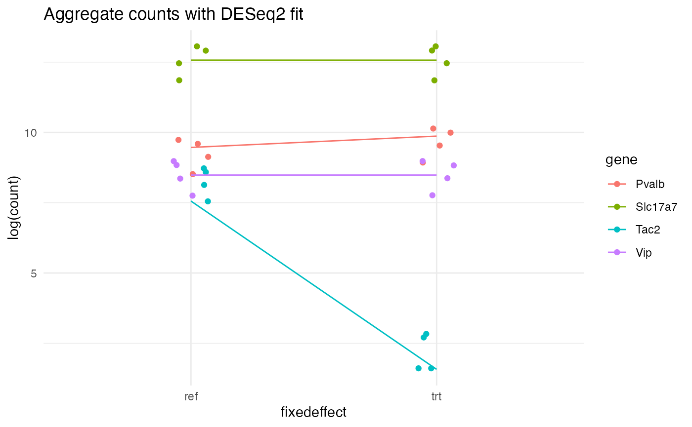
ELLA
ELLA (from Wang and Zhou 2025) is a recently published Python package for SVG testing. There are many different mathematical frameworks for SVG testing. Perhaps the most widely used is exemplified by another package, SPARK (from Sun et al 2020), which tests for spatial variation in gene expression by testing for non-zero covariance in expression between spatial points. ELLA, on the other hand, explicitly models transcript count as a function of spatial position. SVG testing is performed by a likelihood ratio test against a reduced model without spatial terms. This makes ELLA similar to wispack insofar as both model count as a function of spatial position. However, like SPARK and other SVG testing tools, ELLA is unable to make between-group comparisons, i.e., to test for FSEs. ELLA’s modeling also differs from wispack’s modeling in that wispack models count as a function of spatial position using spatial parameters (rate, transition point, and transition slope), while ELLA models count as a linear combination of pre-defined spatial basis functions. These basis functions are beta distributions describing component count distributions.
As ELLA is a Python package, we need to integrate it into our R-based benchmarking pipeline with the reticulate package:
# Set up virtual python environment for reticulate, in bash (terminal):
# python3 -m venv ~/.virtualenvs/r-reticulate
# source ~/.virtualenvs/r-reticulate/bin/activate
# pip install --upgrade pip
# Load reticulate
library(reticulate)
# Set up virtual Python environment
use_virtualenv("/your_working_directory/.virtualenvs/r-reticulate", required = TRUE)
# Install required Python packages
py_install(
c(
"numpy",
"pandas",
"matplotlib",
"scipy",
"scikit-learn",
"torch",
"tqdm",
"ipdb",
"rpy2"
),
pip = TRUE
)With a virtual Python environment set up, we can now install and load ELLA. Note that we are using the original ELLA version (branch ella1), not the most current.
# Install ELLA, in bash (terminal):
# git clone --branch ella1 https://github.com/jadexq/ELLA.git
# cd ELLA
# pip install .
# import ELLA module
# ... my_ELLA_dir is presumably "./ELLA/ELLA"
ELLA_mod <- import_from_path("ELLA", path = my_ELLA_dir)As with DESeq2, we need a function to convert our simulation data into the format expected by ELLA. First, we will limit the data to only the reference condition, as ELLA cannot test between-groups. The fixedeffect column will have a single unique value (ref) and will be renamed type as a stand-in for cell type. Second, ELLA is designed to model intracellular gene expression. It expects each replicate to be a single cell, so we will change the umi column of the simulation data to cell. Third, we will rename bin_x and bin_y to x and y, respectively, as ELLA expects these names. Fourth, we rename count to umi, for the same reason.
The most complex issue is that ELLA is intended to model the radial axis out from a cell’s nucleus. It requires, for each cell, an center coordinate \langle \mathrm{centerX}, \mathrm{centerY} \rangle from which the radial distance of each spatial point is computed. The attractor simulations are, of course, purpose-built to exhibit spatial variation along the x and y axes. This stipulated spatial variance will be lost if we simply pick a coordinate and give that coordinate to ELLA as the cell center. To preserve the stipulated spatial variance, we need to wrap the square patch around a pseudo-origin. While we could convert either the x or y axis into the radial axis r, we will use x, leaving y as the angular axis \theta. Then the transformation of the original Cartesian coordinates \langle x,y\rangle into new Cartesian coordinates \langle x^\prime,y^\prime\rangle in which the old x coordinate becomes radial distance and the old y coordinate becomes angular displacement is given by: x^\prime = x \cos\left(\frac{2 \pi y}{\mathrm{max}(y)} \right) y^\prime = x \sin\left(\frac{2 \pi y}{\mathrm{max}(y)} \right) This transformation puts the cell center at \langle 0,0\rangle for all cells. It also requires compensating for radial dilution, which we do by multiplying the count at each point by its radial distance and normalizing.
make_ELLA_data <- function(
sim_data,
radial_dim = "bin_x",
theta = "bin_y"
) {
# Initialize top-level list structure
ella_data <- list()
length(ella_data) <- 7
names(ella_data) <- c(
"types", # character vector of cell types
"cells", # named list, each element is a character vector of cell IDs for each type (with the type as the list element name)
"cells_all", # character vector of all cell IDs
"genes", # named list, each element is a character vector of gene names for each type (with the type as the list element name)
"cell_seg", # data frame with columns x, y, and cell with points giving the cell boundary segmentation
"nucleus_seg", # data frame with columns x, y, and cell with points giving the nucleus boundary segmentation
"expr" # data frame with columns "type", "cell", "gene", "x", "y", "umi", "centerX", "centerY", "sc_total"
)
# Set types
# ... use "ref" from fixedeffect as the cell type, throw out "trt" (because no ground truth about SVG for trt)
ella_data$types <- list("ref")
# Throw out trt data
sim_data <- sim_data[sim_data$fixedeffect == "ref",]
# Set cells and cells_all
cell_names <- sort(unique(sim_data$replicate))
ella_data$cells <- list(ref = cell_names)
ella_data$cells_all <- cell_names
# Set genes
ella_data$genes <- list(ref = sort(unique(sim_data$gene)))
# Make cell segmentation data
x_range <- range(sim_data$bin_x)
y_range <- range(sim_data$bin_y)
n_segs <- 2 * (x_range[2] - x_range[1] + 1) + 2 * (y_range[2] - y_range[1] + 1)
n_cells <- length(cell_names)
ella_data$cell_seg <- data.frame(
x = rep(c(
rep(x_range[1], y_range[2] - y_range[1] + 1),
rep(x_range[2], y_range[2] - y_range[1] + 1),
seq(x_range[1], x_range[2]),
seq(x_range[1], x_range[2])
), n_cells),
y = rep(c(
seq(y_range[1], y_range[2]),
seq(y_range[1], y_range[2]),
rep(y_range[1], x_range[2] - x_range[1] + 1),
rep(y_range[2], x_range[2] - x_range[1] + 1)
), n_cells),
cell = rep(cell_names, each = n_segs)
)
# wrap patch around nuclear center
r <- sim_data[,radial_dim]
theta <- sim_data[,theta]
r <- r - min(r) + 1
theta <- theta - min(theta) + 1
X <- r * cos((theta/max(theta)) * 2 * pi)
Y <- r * sin((theta/max(theta)) * 2 * pi)
# wrap cell segmentation around nuclear center
r_seg_dim <- substr(radial_dim, nchar(radial_dim), nchar(radial_dim))
theta_seg_dim <- "y"
if (r_seg_dim == "y") theta_seg_dim <- "x"
theta_seg <- ella_data$cell_seg[,theta_seg_dim]
theta_seg <- theta_seg - min(theta_seg) + 1
r_seg <- ella_data$cell_seg[,r_seg_dim]
r_seg <- r_seg - min(r_seg) + 1
ella_data$cell_seg[,r_seg_dim] <- r_seg * cos((theta_seg/max(theta_seg)) * 2 * pi)
ella_data$cell_seg[,theta_seg_dim] <- r_seg * sin((theta_seg/max(theta_seg)) * 2 * pi)
# Compensate for radial dilution
max_count <- max(sim_data$count)
count <- sim_data$count * r
count <- (count / max(count)) * max_count
count <- as.integer(round(count, 0))
# Get library counts
sc_total <- rep(0, nrow(sim_data))
for (c in cell_names) {
mask <- sim_data$replicate == c
sc_total[mask] <- sum(sim_data$count[mask])
}
# Make expr data
ella_data$expr <- data.frame(
type = sim_data$fixedeffect,
cell = sim_data$replicate,
gene = sim_data$gene,
x = X,
y = Y,
umi = count,
centerX = 0,
centerY = 0,
sc_total = sc_total
)
return(ella_data)
}Let’s plot one replicate from this simulation data to see the transformation:
ella_sim <- make_ELLA_data(test_sim$data)
plt1 <- ggplot(test_sim$data[test_sim$data$replicate == "replicate1" & test_sim$data$fixedeffect == "ref",], aes(x = bin_x, y = bin_y, color = gene, size = count)) +
geom_point(alpha = 0.5) +
ggtitle("Original Cartesian coordinates") +
theme_minimal() +
theme(
panel.background = element_rect(fill = "white", colour = NA),
plot.background = element_rect(fill = "white", colour = NA),
legend.position = "bottom"
) +
guides(size = "none")
plt2 <- ggplot(ella_sim$expr[ella_sim$expr$cell == "replicate1",], aes(x = x, y = y, color = gene, size = umi)) +
geom_point(alpha = 0.5) +
ggtitle("Transformed radial coordinates") +
theme_minimal() +
theme(
panel.background = element_rect(fill = "white", colour = NA),
plot.background = element_rect(fill = "white", colour = NA),
legend.position = "bottom"
) +
guides(size = "none")
grid.arrange(plt1, plt2, nrow = 1)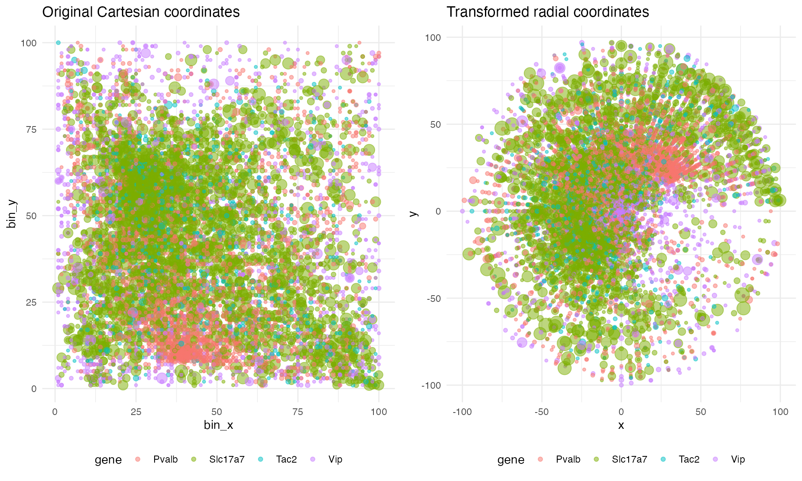
We can also spot-check that the spatial distribution is preserved across the transform by plotting the count density along the original x axis and the transformed radial axis:
plot_count_density <- function(
df_rad,
df_car,
nbins = 25,
replicate = "replicate1"
) {
# Filter data
df_rad <- df_rad[df_rad$cell == replicate,]
df_rad$count <- df_rad$umi
df_car <- df_car[df_car$replicate == replicate & df_car$fixedeffect == "ref",]
df_car$x <- df_car$bin_x
df_car$y <- df_car$bin_y
# For matching the log-scale transforms
eps <- 4e-3
# Density vs x
xbreaks <- seq(min(df_car$x), max(df_car$x), length.out = nbins + 1)
xmid <- 0.5 * (xbreaks[-1] + xbreaks[-length(xbreaks)])
xwidth <- diff(xbreaks)
df_car$xbin <- cut(df_car$x, breaks = xbreaks, include.lowest = TRUE)
xcount <- tapply(
df_car$count,
list(df_car$gene, df_car$xbin),
sum
)
df_x <- data.frame(
gene = rep(rownames(xcount), times = ncol(xcount)),
xmid = rep(xmid, each = nrow(xcount)),
density = as.vector(xcount) / rep(xwidth, each = nrow(xcount))
)
p_x <- ggplot(df_x, aes(x = xmid, y = density + eps, color = gene)) +
geom_line() +
scale_y_log10() +
labs(x = "x", y = "count density (log10)") +
theme_minimal() +
theme(
panel.background = element_rect(fill = "white", colour = NA),
plot.background = element_rect(fill = "white", colour = NA),
legend.position = "bottom"
)
# Density vs radius
r <- sqrt(df_rad$x^2 + df_rad$y^2)
rbreaks <- seq(min(r), max(r), length.out = nbins + 1)
rmid <- 0.5 * (rbreaks[-1] + rbreaks[-length(rbreaks)])
rwidth <- diff(rbreaks)
df_rad$rbin <- cut(r, breaks = rbreaks, include.lowest = TRUE)
rcount <- tapply(
df_rad$count,
list(df_rad$gene, df_rad$rbin),
sum
)
df_r <- data.frame(
gene = rep(rownames(rcount), times = ncol(rcount)),
rmid = rep(rmid, each = nrow(rcount)),
radial_density =
as.vector(rcount) /
(2 * pi * rep(rmid, each = nrow(rcount)) * rep(rwidth, each = nrow(rcount)))
)
p_r <- ggplot(df_r, aes(x = rmid, y = radial_density + eps, color = gene)) +
geom_line() +
scale_y_log10() +
labs(x = "radius", y = "radial density (log10)") +
theme_minimal() +
theme(
panel.background = element_rect(fill = "white", colour = NA),
plot.background = element_rect(fill = "white", colour = NA),
legend.position = "bottom"
)
# Arrange
title <- grobTree(
rectGrob(
gp = gpar(fill = "white", col = NA)
),
textGrob(
paste0("Density comparison of radial transform, ", replicate),
gp = gpar(fontsize = 14, fontface = "bold")
)
)
panels <- arrangeGrob(p_x, p_r, ncol = 2)
grid.arrange(
title,
panels,
ncol = 1,
heights = c(0.1, 1)
)
}
plot_count_density(ella_sim$expr, test_sim$data)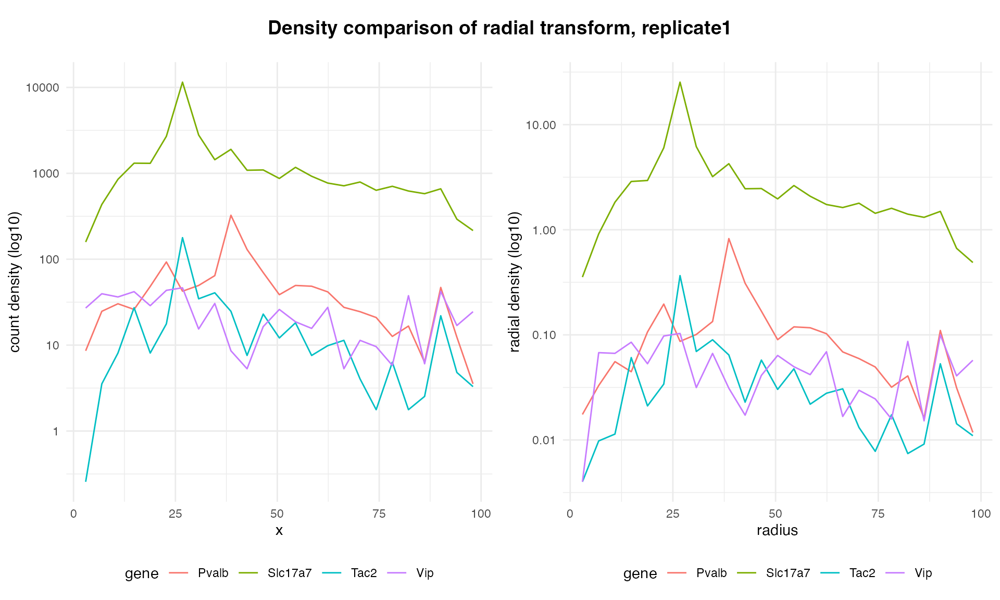
Before writing the ELLA modeling function, let’s write helper functions for running ELLA on simulation data and extracting SVG results. Note that three settings for the ELLA class have been changed from the default. Minimum learning rate and maximum iterations have been set to speed up the fits. More importantly, the L1 regression penalty factor has been changed from a default of zero to 0.2. Initial testing showed poor performance (high false discovery and false positive rates) without the L1 penalty.
# Run ELLA on simulated data
run_ELLA <- function(
sim_data,
L1_lam = 0.2
) {
# construct ELLA object
ELLA_class <- ELLA_mod$ELLA
ella_sim <- ELLA_class(
dataset = "sim_benchmark",
adam_learning_rate_min = 1e-2,
max_iter = 1000L,
L1_lam = L1_lam
)
# convert simulated data to ELLA format
ella_data <- r_to_py(make_ELLA_data(sim_data))
# load data into ELLA object
ella_sim$load_data(data_dict = ella_data)
# register cells
ella_sim$register_cells()
# prepare data
ella_sim$nhpp_prepare()
# fit nhpp model
ella_sim$nhpp_fit()
# expression intensity estimation
ella_sim$weighted_density_est()
# likelihood ratio test
ella_sim$compute_pv()
# return ELLA results
return(ella_sim)
}
# Extract SVG p-values from ELLA results
extract_svg <- function(ella_sim) {
pv_svg <- unlist(ella_sim$pv_fdr_tl[["ref"]])
names(pv_svg) <- ella_sim$gene_list_dict[["ref"]]
pv_svg
}Finally, we can write the full ELLA modeling function for benchmarking:
# Full model pipeline
model_attractor_simulation_ELLA <- function(
sim,
sim_num
) {
# Run ELLA
model <- run_ELLA(sim$data)
# Extract model results for comparing to ground truth
svg_pvalues <- unlist(model$pv_cauchy_tl[["ref"]])
names(svg_pvalues) <- model$gene_list_dict[["ref"]]
svg_pvalues
# Extract ground-truth
GT <- attractor_simulation_ground_truth(sim)
SVGs <- GT$SVGs
# Compile results in named vector
results <- data.frame(
est = c(svg_pvalues),
true = c(SVGs),
param = c(
rep("SVG", length(svg_pvalues))
),
id = c(
names(svg_pvalues)
),
method = "ELLA",
sim = sim_num
)
return(results)
}Before performing the benchmarking itself, let’s spot-check how well ELLA fits the simulated data. Here is a function for producing a plot of the fit:
# Show how ELLA fits the simulated data
plot_ella_fit <- function(
ella_sim,
sim_data,
title_extra
) {
# Convert spatial coordinate to radial distance
df_ella_sim <- data.frame(
d_c_s = as.numeric(ella_sim$df_registered$d_c_s),
cell = as.character(ella_sim$df_registered$cell),
gene = as.character(ella_sim$df_registered$gene),
umi = as.integer(ella_sim$df_registered$umi)
)
rad <- round(df_ella_sim$d_c_s,2)*100
rads <- sort(unique(rad))
# Initialize data frame to hold results
n_rows <- length(rads) * length(ella_sim$gene_list_dict[["ref"]])
counts <- data.frame(gene = character(n_rows), rad = numeric(n_rows), count = integer(n_rows), countc = integer(n_rows))
# Grab simulation data with original Cartesian coordinates
datac <- sim_data[sim_data$fixedeffect == "ref",]
# Compute counts per radial bin for each gene
i <- 0
for (r in rads) {
mask_r <- rad == r
mask_rc <- datac$bin_x == r
for (g in ella_sim$gene_list_dict[["ref"]]) {
mask <- df_ella_sim$gene == g & mask_r
maskc <- datac$gene == g & mask_rc
i <- i + 1
counts$gene[i] <- g
counts$rad[i] <- r
n <- length(unique(df_ella_sim$cell[mask]))
# ... count after the radial transform
counts$count[i] <- sum(df_ella_sim$umi[mask])/n
# ... count before the radial transform
counts$countc[i] <- sum(datac$count[maskc])/n
}
}
# Grab ELLA predictions
predictions <- ella_sim$weighted_lam_est[["ref"]]
names(predictions) <- ella_sim$gene_list_dict[["ref"]]
pred_wide <- as.data.frame(predictions)
r <- c(1:nrow(pred_wide))
pred_wide$r <- r
pred <- data.frame()
for (g in names(predictions)) {
df_g <- data.frame(
gene = g,
r = r,
lam = predictions[[g]]
)
pred <- rbind(pred, df_g)
}
# plot
scalar <- 10 # ad hoc
# ... As the ELLA fit accounts for radial dilution, we need to use the undiluted counts pre-transform for comparison
ggplot(na.omit(pred), aes(x = r, y = log(lam+1), color = gene)) +
geom_line() +
labs(
title = paste0("ELLA fit vs. counts", title_extra),
x = "radius",
y = "expression level (log scale)"
) +
geom_point(data = na.omit(counts), aes(x = rad, y = log(countc/scalar+1), color = gene), alpha = 0.5) +
theme_minimal() +
theme(
panel.background = element_rect(fill = "white", colour = NA),
plot.background = element_rect(fill = "white", colour = NA),
legend.position = "bottom"
)
}And here are the results:
plt_ella1 <- plot_ella_fit(run_ELLA(test_sim$data), test_sim$data, title_extra = " (L1 penalty = 0.2)")
plt_ella2 <- plot_ella_fit(run_ELLA(test_sim$data, L1_lam = 0.0), test_sim$data, title_extra = " (L1 penalty = 0.0)")
grid.arrange(plt_ella1, plt_ella2, nrow = 1)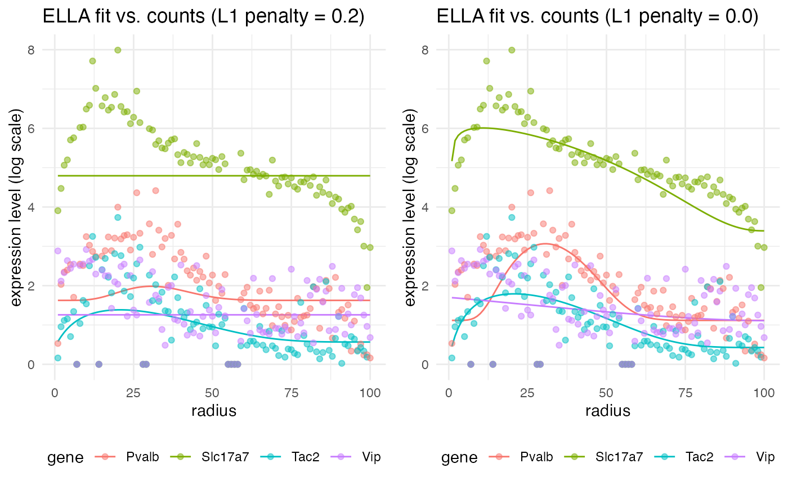
Notice that the fit is not the best with the L1 penalty, but if we set the penalty back to the default of zero, we get a much better fit. However, although this looks like a better fit, prior testing (not shown here) demonstrated that it leads to very high false discovery and false positive rates (around 0.2 to 0.5) across the benchmark simulations. Therefore, we will keep the L1 penalty at 0.2 for the benchmarking itself.
Running benchmarks
To begin, we need a function which will loop through the simulation and modeling functions, collecting results. The function run_attractor_sim_benchmarks is provided with wispack for this purpose. We will run 250 simulations and model each with wisp, DESeq2, and ELLA. As there are four genes per simulation, this will yield a thousand sample points for computing benchmark metrics.
results <- run_attractor_sim_benchmarks(
seed_data = count_data_neurons_patch,
n_sims = 250,
modeling_functions = list(
wisp = model_attractor_simulation_wisp,
ELLA = model_attractor_simulation_ELLA,
DESeq2 = model_attractor_simulation_DESeq2
),
modeling_function_args = list(wisp = list(bs_num = 1e3, max_fork = bs_chunksize))
)Results
The results of this run are provided with wispack:
benchmark_results <- read.csv(
system.file(
"extdata",
"benchmark_results_final250.csv",
package = "wispack"
)
)Wispack also includes a function, analyze_attractor_sim_benchmarks, for aggregating all of the benchmark metrics from the results of the run_attractor_sim_benchmarks function:
benchmark_metrics <- analyze_attractor_sim_benchmarks(benchmark_results)By default, this function computes false positive rate (FPR), false discovery rate (FDR), and power based on a significance threshold of 0.05. For methods which return estimates for FSE size or random effect size, it also computers the correlation between the estimated and true effect size. The mean run time is computed for each method as well. Here are the results for wisp, DESeq2, and ELLA:
## DESeq2 ELLA wisp
## cor_rate 0.228 NA 0.848
## cor_ran NA NA 0.794
## FPR_svg NA 0.018 NA
## FDR_svg NA 0.028 NA
## power_svg NA 0.398 NA
## FPR_fse 0.243 NA 0.003
## FDR_fse 0.414 NA 0.016
## power_fse 0.815 NA 0.428
## mean_sec_to_model 1.722 27.428 426.717As can be seen, both ELLA and wisp control for false positives very well, with FDRs well below the intended 0.05 threshold. This control is evidently bought at the price of power, however. On the other hand, DESeq2 shows higher power, but at the cost of a very high FDR. This is perhaps due to design, as DESeq2 is intended to be used for data exploration on large gene panels, while ELLA and wisp are aimed at hypothesis testing.
Visualizing correlations
We can also visualize the correlation between estimated and true effect sizes for wisp and DESeq2. Here are the results for FSE size estimation:
corr_results <- benchmark_results[
grepl("_effect", benchmark_results$results.param),
grepl("est|true|param|method|id", colnames(benchmark_results))
]
colnames(corr_results) <- gsub("results.", "", colnames(corr_results))
ggplot(corr_results[corr_results$param == "rate_effect",], aes(x = true, y = est, color = id)) +
geom_point(alpha = 0.5) +
geom_abline(slope = 1, intercept = 0, linetype = "dashed") +
facet_wrap(~method, scales = "free_y") +
theme_minimal() +
labs(
title = "FSE estimation",
x = "Ground truth",
y = "Estimated"
) +
theme(
panel.background = element_rect(fill = "white", colour = NA),
plot.background = element_rect(fill = "white", colour = NA),
legend.position = "bottom"
)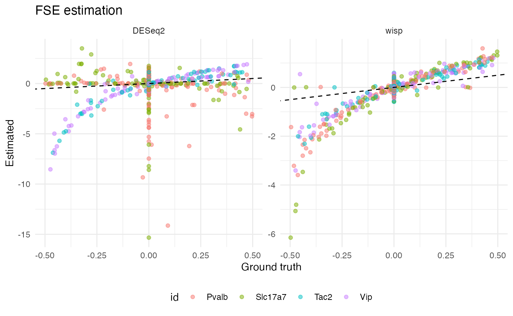
Notice that, for all four gene types, wisp produces a tight (but non-linear) correlation between estimated and true FSE size. Interestingly, DESeq2 produces a roughly linear correlation for Pvalb and Slc17a7, but the correlation is very poor with true null effects associating with a wide range of effect estimates. For Tac2 and Vip, DESeq2 produces a result more like wisp, with a tight, non-linear correlation. It’s not immediately clear why DESeq2 performs well for Tac2 and Vip, but poorly for Pvalb and Slc17a7. It’s not explained by performing well on true positives, as Tac2 and Pvalb are both true positives, while Vip and Slc17a7 are both true negatives. Neither does count seem to matter; while Slc17a7 and Tac2 differ in counts, Pvalb and Vip do not.
We can also get a sense for how well wisp did estimating random effects by plot true vs estimated values:
ggplot(corr_results[corr_results$param == "random_effect",], aes(x = true, y = est, color = id)) +
geom_point(alpha = 0.5) +
geom_abline(slope = 1, intercept = 0, linetype = "dashed") +
facet_wrap(~method, scales = "free_y") +
theme_minimal() +
labs(
title = "FSE estimation",
x = "Ground truth",
y = "Estimated"
) +
theme(
panel.background = element_rect(fill = "white", colour = NA),
plot.background = element_rect(fill = "white", colour = NA),
legend.position = "bottom"
)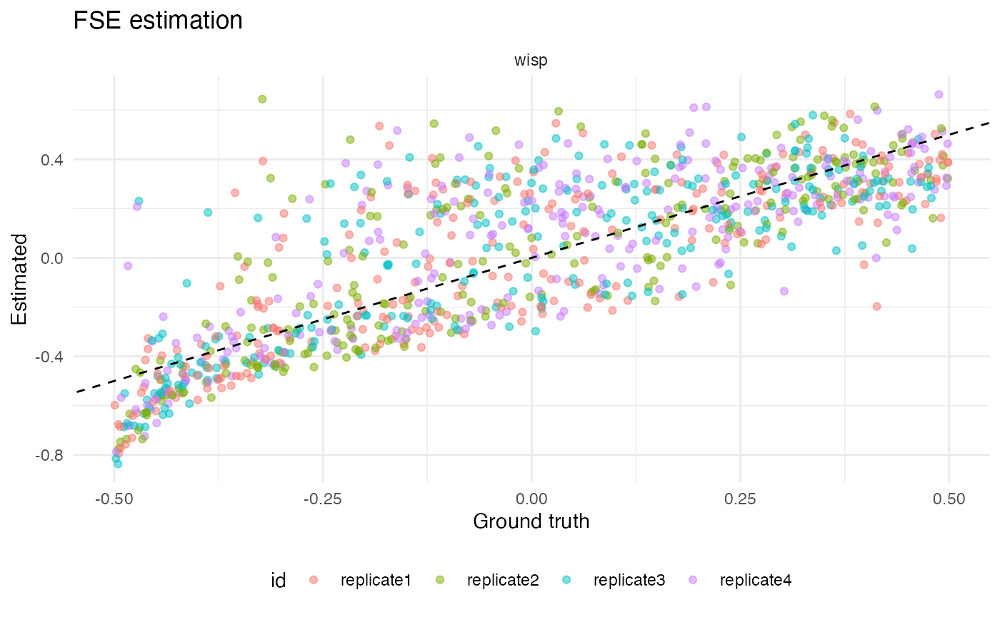
A final note concerns the mean run times for each method: on average, it took 2 seconds to fit DESeq2 to the data, 27 seconds to fit ELLA, and 427 seconds to fit wisp. This is, of course, an order of magnitude increase at each step. That DESeq2 would be (at least) an order of magnitude faster than ELLA or wisp makes sense: DESeq2 essentially fits a GLM to group means, while ELLA and wisp fit models to transcript counts at individual spatial points. However, the order of magnitude increase from ELLA to wisp is explained by the hypothesis testing. Wispack would also need only about 20-30 seconds to fit a single model, but estimating p-values through bootstrap resampling. For this benchmark, a thousand bootstraps were done per model, in parallel across a hundred cores, leading to the ten-fold increase in computation time.